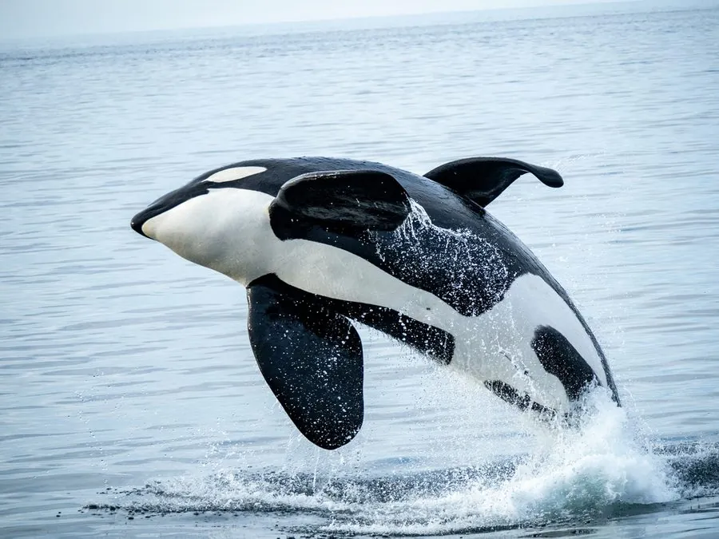

哺乳动物 · 动物界
虎鲸 Orcinus orca

海豚科中体型最大的成员，黑白分明，群体协作捕猎，靠家族方言交流，是海洋中分布最广的鲸类之一。
- 分类
- 门脊索动物门纲哺乳纲目偶蹄目科海豚科属虎鲸属
- 栖息环境
- 从极地到热带的各大洋，近岸、冰缘与开阔海域均有分布
- 地理分布
- 全球各大洋，北太平洋、北大西洋和南大洋种群较多
- 保护级别
- IUCN 数据缺乏（DD）；CITES 附录Ⅱ
物种志
虎鲸体长 5–9.8 米，体重 3–9 吨，雄性明显大于雌性。它的身体黑白分明，眼后有一块白色椭圆斑，背鳍高而直立，雄性背鳍可达 1.8 米；腹部和尾柄下方为白色，尾鳍宽大有力。
虎鲸分布于世界各大洋，从极地到热带都能见到，常出现在近岸和冰缘海域。它们是高度社会化的动物，以母系群为核心，由最年长的雌性带领，成员包括其子女和孙辈；不同种群有各自独特的叫声“方言”，并有稳定的食性偏好：有的专吃鱼类，有的捕食海豹、海狮甚至大型鲸类的幼崽。虎鲸会用尾鳍拍打水面，制造波浪把浮冰上的海豹冲落水中。雌鲸妊娠期约 15–18 个月，每胎 1 仔。目前全球数量尚可，但部分地方种群受食物减少和污染影响。
形态与习性
- 食性鱼类、海豹、海狮及其他鲸类的幼崽，不同种群食性分化
- 体长5–9.8 m，雄性大于雌性
- 体重3–9 t
- 寿命雄性约 30–50 年，雌性可达 80–90 年
- 繁殖妊娠期约 15–18 个月，每胎 1 仔
- 社会结构母系群，由最年长雌性带领
- 背鳍雄鲸背鳍可高达 1.8 m
趣味知识
- 虎鲸不同种群有各自的叫声“方言”，族群间几乎不混用。
- 它们会用尾鳍拍水制造波浪，把浮冰上的海豹冲落水中。
- 虎鲸是海豚科中体型最大的成员，而非真正的鲸类。
- 虎鲸群体由最年长的雌性带领，祖母常帮助照顾后代。